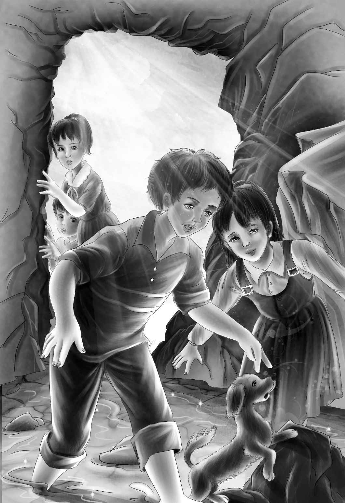

Exploring
第二天早上，雨终于停了，天气格外晴朗。四个孩子先去游了泳，吃过早饭之后，大家提着大水壶再次出去探险了。
“咱们今天去小岛的尽头看看吧！”亨利提议道。
“一路上，我还可以画一张小岛的全景图。”维莉拿出一个蓝色的本子。
他们悠哉游哉地走着，直到小岛的尽头映入眼帘。
“哇，看呀！”杰西说，“好大一堆贝壳！”
“比班尼还要高呢。”亨利欢呼着和其他人一起跑了过去。
“只可惜都脆了。”班尼捡起一些贝壳。
“是碎了，班尼。”亨利纠正道。
“好吧，你说碎了就碎了吧，”班尼说，“又老又碎的蛤蜊壳。一个个都好丑，不适合咱们的博物馆。”
“没错，不过你们看！”杰西说，“全都是蛤蜊壳，似乎有人在这儿坐了好几年，一直在不停地剥蛤蜊。”
“说不定还真是。”维莉说。
“那谁会做这种事呢？”班尼问道。
“我也不知道，班尼，”亨利回答，“我只知道我从未见过这样的东西，就连图片也没见过。”他拿起一根棍子，在贝壳堆里扒拉了起来。
维莉在本子上画了一小幅贝壳堆的图画。接着，孩子们开始探索小岛的另一端，发现那里岩石成堆。杰西、亨利和维莉正在观察高高的岩石顶，突然听到班尼叫道：“快看，有个小山洞！咱们进去吧。”
“果然是山洞。”亨利看了看。
“快进来吧，像我这么做。”班尼跪到地上，手脚并用地爬了进去。
其他几个孩子嘻嘻哈哈地跟着班尼爬了进去。“噢，看起来就像是一个小房间，”杰西大声说，“而且我还看见了另外一个房间。”
“这里真好玩，”亨利环顾了一下四周，“咱们继续往里爬。”
大家跟在亨利后面，爬进了另外一个小洞。此时，大家回过头去，依然还能看到大海。
孩子们坐了下来，亨利用棍子随意地挖着沙子，突然，一块小小的石头显露了出来。
亨利惊呼道：“这是什么？”他捡起石头，仔细擦拭掉上面潮湿的沙子后，不由激动地跳了起来。
“这是一枚印第安人用过的箭头！”他叫道，“你们想不到吧？”
“让我看看，”杰西激动地说，“这肯定是一枚箭头。看到末端这个细小的地方了吗？他们就是在这儿固定箭柄的。”
“他们还会在另外一端插上羽毛。”亨利说。
“这个可以放到咱们的博物馆里。”班尼欢呼道。
“就这么定了！”亨利说，“你想得还真周到，班尼。咱们再挖一下，看能不能找到第二枚箭头。要是印第安人真的在这儿住过的话，那除了箭头，肯定还会有其他东西。”
孩子们赶紧动手开挖，望望见状，也大刨特刨起来。
“要是咱们能找到很多印第安人的遗物，”亨利说，“说不定真有博物馆愿意出钱来买呢！”
“这主意不错！改天咱们早点过来挖。”杰西说，“反正这活儿有趣得很。”

突然，望望停下爪子，叫了起来。
“怎么了，小宝贝？你想跟我们说什么？”亨利问道。他走过去，将手伸进望望刚刚刨开的洞里，摸出一块平整的大石头来。
“我觉得这应该是一把斧头！”他把石头拿在手里翻来覆去地看着，惊呼起来。
其他几个孩子赶忙围过来看，班尼将它接了过去。望望又叫了起来，不过这一次的叫声却很急躁。接着，它猛地转过头，长嚎了一声。
“有点不对劲，”亨利喊着，“望望从来没有嚎叫过。”
“噢，看，亨利！”杰西惊恐地叫道。
大家全都向洞口望去，只见海水已经淹到了他们脚背的位置。
“咱们快点出去！”亨利一边喊一边朝洞口爬去，“快，能多快就多快！”
几个人拼命地爬了起来，灌进来的水越来越多，望望只能游泳前进了。
“大乔不知道咱们在这里！”班尼喊道，“不然他就可以来救咱们了！我好害怕！”
“别说话，班尼，接着爬。”
很快，他们就爬到了第一个小洞里。
“浪头打过来了！”亨利喊道，“等海浪过去之后，大家赶紧出去！”
海浪扑了上来，从他们的头顶涌了过去。杰西一把抓住班尼的胳膊，将他拖了起来。四个孩子惊恐不已地在水中向前爬着。在又一波海浪到来之前，他们终于逃到了岩石洞壁旁，定了定神后，他们才爬到了贝壳堆上。
“小心！”亨利说，“别掉下去啦！”
回到干燥的沙滩上，杰西不由得松了口气：“哦，谢天谢地！”
“我都快累坏啦！”班尼气恼地说，“差点被那个破山洞给吓死。”
“好啦，”亨利说，“我应该早点留意潮汐的。没有潮水的时候，山洞里是绝对安全的。还好咱们出来了，这也算是万幸了！”
“我我我们真的出来了，”维莉哆嗦着说，“多多多亏了好望望。”她依然没有从惊恐中缓过神儿来，浑身不停地发着抖。
“对，”亨利说，“咱们先歇一会儿，然后原路返回。”
四个孩子慢慢地回到了马厩，大乔看出他们有点不对劲，于是站在小屋那儿朝他们挥了挥手。
“没事吧？”他问。
“有事！”班尼说，“我们被吓死了，还差点没命了！水涌进了洞里，差点把我们淹死了。”
“怎么回事？”大乔担心地问道。
“我们爬进了一个洞里，结果涨潮时差点把我们困住。”亨利说，“我应该早点留意这个问题的，要不是望望叫了起来，我们压根没注意到洞里进水了。”
“看得出来你们都累坏了，”大乔说，“已经没力气做午饭了吧？丹尼尔船长炖了一大锅菜，要不你们拿上自己的碗，过来跟我们一起吃吧？”
杰西看着大乔微笑了起来。“好呀，”她说，“我们这就去拿碗和勺子，很快回来。”
在小屋旁边的沙地上坐下之后，孩子们感觉好多了。热乎乎的炖菜很美味，吃饱的班尼看起来又困了。
“那个洞在哪儿？”大乔问道。
“在小岛的尽头，”杰西说，“我们在里面找到了一些印第安人的遗物。”
“你们都找到什么了？”大乔连忙问。
亨利从口袋里掏出那枚箭头，递给了他。
“我们还找到了另外一样东西，可惜潮汐来了，我们只想着快点逃出去，就忘了带走了。”他遗憾地说。
“不，我带了。”此时班尼都快要睡着了，他迷迷糊糊地说，“就在我的口袋里，但我没力气掏出来。”
大乔将手伸进了班尼的口袋，掏出了那块石头。
“是印第安人的斧头！”大乔立刻说道。
“我原本就觉得像，”亨利说，“不过你似乎很肯定。”
“我想我可以肯定，”大乔反复看了看，“说不定洞里还有其他东西。”
“我是怕了，不敢再去那个破山洞了。”班尼气呼呼地说。
“噢，别这么说！”大乔说，“只要留意潮汐就行。那儿肯定有许多值得发掘的印第安人遗物。你们要是需要同伴，我可以跟你们一起去。”
“哦，真的吗？”亨利惊喜地说道，“那我们肯定会非常安全的。在洞口附近还有一大堆贝壳呢！”
“什么？贝壳堆？”大乔说，“那我一定得跟你们一块儿去！一定要去！”
“为什么？”班尼带着浓浓的睡意问，“你为什么一定要去？”不过话音刚落，他就睡着了。
这倒是替大乔省下了回答这个问题的工夫。他只是笑了笑，说：“我帮你们把他送回去，我看大家都需要好好睡一觉。”
大乔抱起班尼，将他送回马厩，放到了班尼的小床上。杰西、维莉和亨利也一起回到了马厩。过了一会儿，其他三个孩子也进入了梦乡。这时，时间刚到中午。